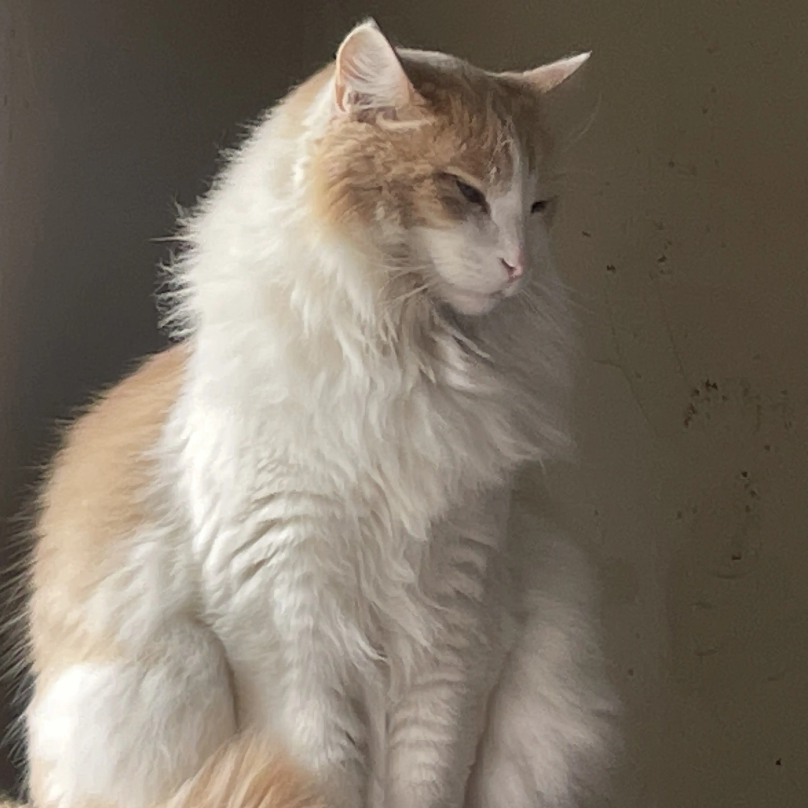
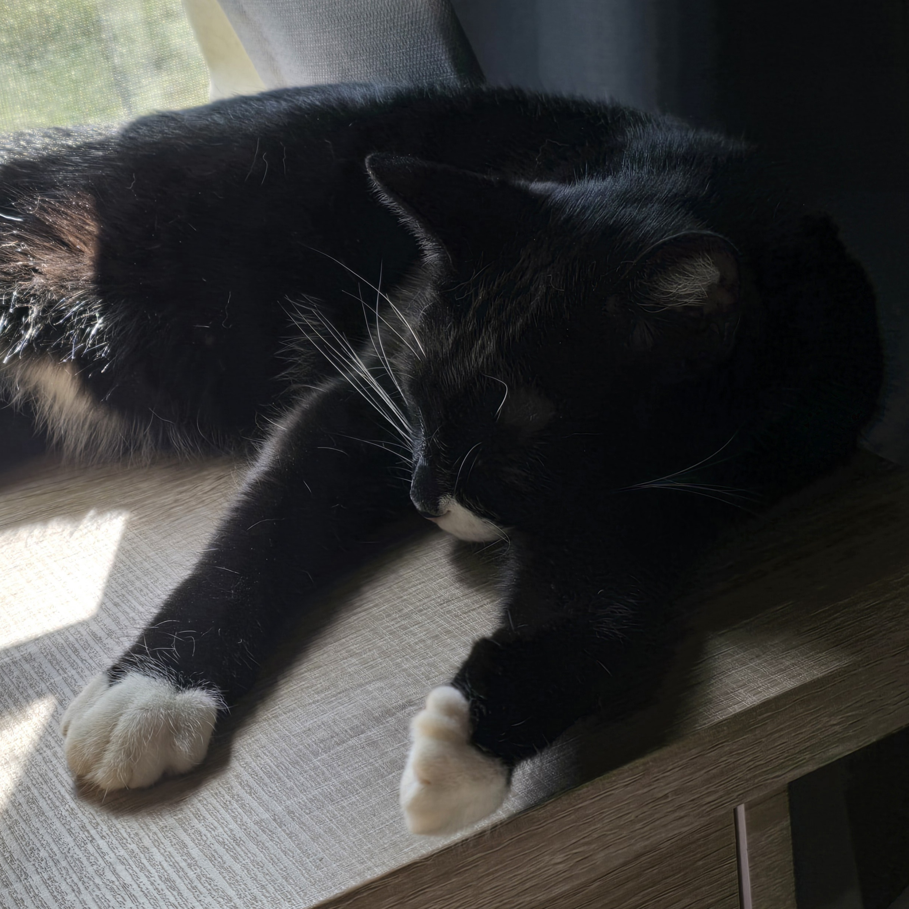

This site has custom and official assets that have been collected over the years, and almost every single region to exist, apart from those that got lost to time.
The repo is being updated regularly, and if you want to contribute and donate your tiles or region projects directly, you're welcome to the repo donations server.
And never forget to have fun or try to LOL! -Solar

We are always open to suggestions if you have ideas on how to improve the site or archival process!
We also accept other resources like downloads for useful programs, or links to whatever's helpful for making modding easier.
Our current scope is to introduce more tools to make your life as a modder easier, like an init file management program, as well as eventually upgrading this site to allow individual file downloads!
Remember to take breaks, and make art that holds value to you. - Magica